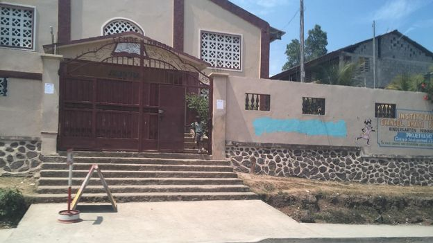
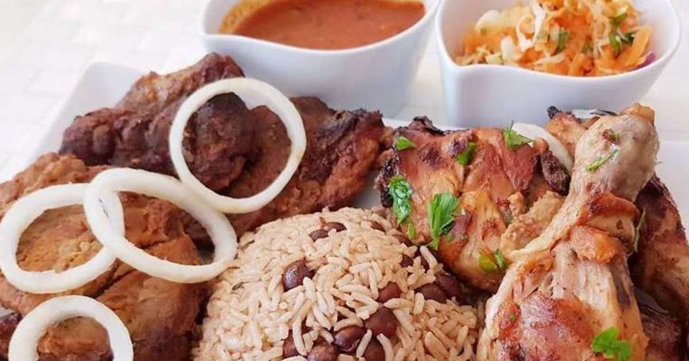

Actualites à la une
La tempête Ciara arrive et, en France, c’est le nord du pays qui risque d’être particulièrement touché. Les vents les plus violents sont prévus entre dimanche matin et lundi matin, a prévenu Météo France. Les plus fortes rafales pourront atteindre 140 km/h sur les caps et côtes exposés, et entre 100 et 120 km/h au nord de la Loire. En Grande-Bretagne, le service météo local s’attend à ce que les fortes rafales et pluies provoquent des annulations et des retards dans le transport aérien, ferroviaire et maritime, voire des dégâts sur les habitations, avec de possibles coupures de courant. La tempête concerne plusieurs autres pays, dont l’Irlande, l’Allemagne et la Suisse.
La coronavirus
 En arrivant à la gare de Jinhua, à 300 kilomètres au sud-ouest de Shanghaï, les rares voyageurs sont accueillis par une équipe en combinaison blanche, le visage barré par des masques bleu ciel. Il faut se tenir devant une caméra thermique quelques secondes. Sur l’écran, les visiteurs apparaissent en un dégradé allant du violet pour les vêtements épais à l’orangé pour le visage, et gare à vous si votre front vire au jaune clair. Puis les Chinois doivent passer leur carte d’identité sur un lecteur. A l’étranger présentant un passeport, les employés étonnés font signe de passer sans plus de questions. Cette option-là n’avait pas dû être prévue dans cette ville moyenne : 1 million d’habitants intra-muros et quatre de plus dans sa juridiction, grosse comme un département français.
En arrivant à la gare de Jinhua, à 300 kilomètres au sud-ouest de Shanghaï, les rares voyageurs sont accueillis par une équipe en combinaison blanche, le visage barré par des masques bleu ciel. Il faut se tenir devant une caméra thermique quelques secondes. Sur l’écran, les visiteurs apparaissent en un dégradé allant du violet pour les vêtements épais à l’orangé pour le visage, et gare à vous si votre front vire au jaune clair. Puis les Chinois doivent passer leur carte d’identité sur un lecteur. A l’étranger présentant un passeport, les employés étonnés font signe de passer sans plus de questions. Cette option-là n’avait pas dû être prévue dans cette ville moyenne : 1 million d’habitants intra-muros et quatre de plus dans sa juridiction, grosse comme un département français.
Info +?
Le 1er janvier 1804 , en déclarant l'indépendance du pays, Dessalines lui redonne le nom taïno d'origine, « Haïti », en honneur à ce peuple amérindien. En créole haïtien, le pays est appelé Ayiti..

Culture Haitienne?
Peinture, sculpture, littérature, musique, langue créole… La culture haïtienne, sous toutes ses formes,
est foisonnante et en grande partie marquée par l’imaginaire de la religion vaudou.

La religion?
La grande majorité des Haïtiens pratique une religion puisque seulement 10,2 % de la population déclare n'être rattachée à aucune religion ou être athée. Près de 55 % des Haïtiens sont catholiques selon (un certain nombre d'entre eux pratiquent parallèlement le vaudou). 
La cuisine Haitienne?
Il est vrai que chez les Haïtiens l’on retrouve du piment sous plusieurs formes à presque toutes les tablées. Que ce soit du piment confit, de la pâte de piment ou du pikliz, il n'en reste pas moins que contrairement à la croyance des non avertis, la nourriture haïtienne n’est pas ... 
Salade Haitienne?
C'est très bon de deguster...